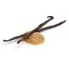

Ingredient pour 6 personnes.

5 oeufs

1 tablette de Chocolat

20g de créme fraîche

1 pincée de sel

1 sachet de sucre vanillé
Preparation: 20 min.
Étape 1
Faites fondre le chocolat cassé en petits morceaux avec de la créme fraîche et sucre vanillé au bain-marie ou à feu doux. Lorsqu'il est complètement fondu, remuez délicatement pour obtenir une pâte lisse. Retirez du feu et laissez tiédir.
Étape 2
Cassez les œufs en séparant les jaunes des blancs. Ajoutez le sel dans les blancs et battez-les en neige très ferme.
Étape 3
Versez peu à peu le chocolat fondu sur les jaunes d'œufs en mélangeant énergiquement.
Étape 4
Incorporez délicatement avec une spatule 1/3 des blancs d'œufs battus puis ajoutez le reste progressivement en soulevant la préparation de bas en haut pour bien répartir le chocolat sans faire tomber les blancs. Répartissez dans 6 verrines.
Étape 5
Faites prendre la mousse au chocolat 3 heures minimum au réfrigérateur. Servez bien frais.